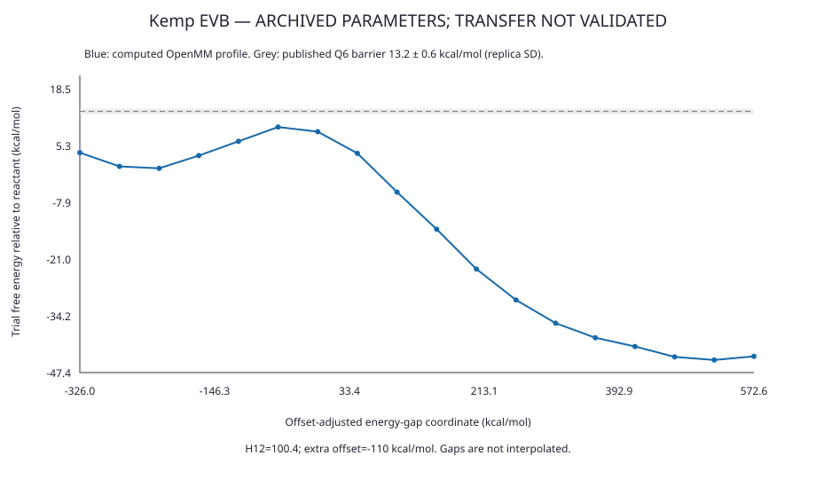

α shifts the product description
It changes the product-state energy relative to the reactant and can affect both the profile barrier and the product-versus-reactant free energy.
Learn the method, run the full enzyme in OpenMM, and understand how the result differs from Q6.
Empirical valence bond (EVB) uses two classical energy descriptions for the same atoms: one with the reactant bonds and one with the product bonds. At each arrangement of the atoms, it evaluates both descriptions and couples them, so the lower energy surface changes smoothly from reactant-like to product-like structures. Sampling many arrangements gives a free-energy profile.
It changes the product-state energy relative to the reactant and can affect both the profile barrier and the product-versus-reactant free energy.
It controls how strongly the reactant and product energy descriptions mix where their energies approach one another. The barrier comes from the sampled profile; neither setting is itself the barrier.
In a spherical setup, the modeled enzyme and nearby water are included inside a chosen-radius sphere centered near the active site. This sets the size of the explicitly modeled environment; it is not a reaction step or an extra EVB state. Special treatment at the sphere’s edge helps account for surroundings left outside and keeps boundary water from behaving like an isolated droplet. Q6 can use a sphere or a periodic box. The boundary and electrostatic treatment need to be consistent between reactant and product descriptions.
Background: Åqvist and Warshel (1993); Kamerlin and Warshel (2010); Q6 manual.
The example is the Kemp reaction studied in the paper. The substrate is the molecule the enzyme acts on. Asp162, part of the enzyme, accepts a proton (a hydrogen nucleus) from it. As the C–H bond breaks, a bond in the substrate's small ring breaks too, opening the ring and forming the products.

Substrate carbon that initially bears Ht. In the product it is part of the new nitrile group.
The transferable hydrogen (proton) that moves from C3 to Asp162.
O1 and N2 are the oxygen and nitrogen in the substrate ring. Their N2–O1 bond breaks as the ring opens.
Asp162 means the enzyme's aspartate residue at position 162. OD1 is one of the two oxygen atoms in its side-chain carboxylate. It accepts Ht and becomes protonated in the product state. These labels identify atoms in the reaction scheme; they are not EVB parameters.
The substrate still holds the proton. Asp162 is ready to accept it.
Asp162 now holds the proton, and the substrate has the ring-opened product structure.
This workshop treats proton transfer and ring opening as linked changes between the reactant and product descriptions. The exercise does not add a separately simulated intermediate.
Both evaluate reactant and product energy descriptions and mix them with the same two-state EVB matrix: H = [[ER, H₁₂], [H₁₂, EP + α]]. The lower eigenvalue defines the EVB surface. Sharing this equation does not make two force fields or simulations equivalent.
| Step | Native Q6 route | This full-enzyme OpenMM route |
|---|---|---|
| Prepare | Q topology (.top), two-state reaction definition (.fep) and stage controls (.inp). | Reads the deposited Q topology and reaction terms; builds both states and an EVBOpenMM scaffold. Full default system: 6,330 atoms and 771 waters, with 22 mapped reactive atoms. |
| Relax and equilibrate | Uses the native stage sequence and its restraints/temperature controls. A file named “min” may specify restrained dynamics, not an optimizer. | Bounded descent followed by L-BFGS minimization, then reactant-endpoint heating and equilibration with a Langevin thermostat. This sequence is an adaptation, not an exact replay. |
| Boundary and electrostatics | The native setup uses a spherical environment, local reaction-field electrostatics (lrf on) and Q surface/boundary treatment. The shown production template uses 10 Å ordinary cutoffs and a 99 Å Q-atom cutoff. | A nonperiodic droplet with direct interactions within 9.9 nm, a harmonic wall on water oxygens, and frozen outer protein. Native LRF/SCAAS and all native sequence restraints are not reproduced. |
| Dynamics and windows | The archived production template uses 1 fs steps, solvent SHAKE and 200 ps/window. A 51-window reconstruction totals about 10.2 ns production/replica. | The short preset uses 0.25 fs steps, rigid-water distance constraints, and 21 windows × 0.25 ps = 5.25 ps total production. These are short test settings, not an OpenMM limit; longer configurations are included. |
| Collect and analyse | Qdyn writes native window energy files (.en); QFEP reconstructs the profile using its controls. | Saves both diabatic energies to JSON/CSV and restart data to SQLite; Python performs QFEP-style per-frame EVB mixing and bin reweighting. The output is not native qfep.out and numerical equivalence is unvalidated. |
| Parameters and interpretation | The paper’s reference for Des27.7-IN is a computed Q6 barrier of 13.2 ± 0.6 kcal/mol, a replica mean ± SD. | The saved full-enzyme comparison gives about 9.57 kcal/mol with transferred reference settings. Its boundary, sampling and parameter transfer remain unvalidated. It is not a reproduced paper barrier. |
The key difference is the Hamiltonian and protocol chosen here. Implementing and validating matching boundary forces, restraints, parameters and sampling is required for a reproduction claim. Longer simulation alone cannot remove a model difference.
The saved shortened native-Q6 exercise has two replica barriers, 9.82 and 8.10 kcal/mol (mean 8.96; sample SD 1.216; SEM 0.860). These are also not the paper’s full protocol, and are not directly matched to the OpenMM run. Inspect the recorded Q6 replica comparison.
The archived QFEP reference provides H₁₂ = 100.4 and α = −110 kcal/mol. It comes from the separate GNCA4-WT reference archive, not a verified Des27.7-IN QFEP setup. A +44.5 kcal/mol product-state correction converts the Morse energy-zero convention, giving a total offset of −65.5. This transfer is not a validated Des27.7-IN calibration and is not fitted to force a 13.2 barrier.
Sources: Listov et al. and supporting information · deposited Kemp inputs · separate QFEP parameter reference · Q6 manual.
The scan shows 25 parameter combinations, including the archived baseline, plus five examples chosen to give a barrier near the value reported in the paper. Compare their profiles and reaction free energies: similar barriers can come with very different product energies, so one barrier alone does not determine both parameters.
The scan reuses saved OpenMM energy samples while changing α and H₁₂. It does not run a new simulation for every choice.
This curve is reconstructed from an archived 21-window, 6,330-atom OpenMM run.

The default system is Des27.7-IN: 6,330 atoms, 771 waters and three reactive Morse pairs. A CPU is enough to start; runtime depends on your hardware. Install Conda or Miniforge first.
git clone https://github.com/ND7996/Kemp-EVB-Workshop.git cd Kemp-EVB-Workshop conda env create -f kemp_evb/calculation/environment.yml conda activate kemp-short python -m pip install --no-deps --no-build-isolation ./EVBOpenMM
Already cloned it? Run git pull --no-rebase from its root instead of cloning again. Already have kemp-short? Use conda env update -f kemp_evb/calculation/environment.yml instead of creation, then activate it. EVBOpenMM is included as ordinary source files: no private GitHub access or personal paths.
python kemp_evb/calculation/scripts/run_kemp_evb.py
This one command builds both states, minimizes, heats and equilibrates the endpoint, then collects mapping-window energies. It writes the PDB, DCD trajectories, energy traces and restart database under kemp_evb/full_enzyme/runs/full_enzyme_short/.
python kemp_evb/calculation/scripts/run_kemp_evb.py --mode profile --bins 18 --open
This reads your sampled energies and opens profile.html. It does not draw a prescribed five-atom path. Gaps indicate insufficiently resolved sampling; coarser bins do not create new information.
A complete short workflow is not a converged scientific result. The preset collects only 5.25 ps total production. Before interpreting a barrier, inspect the diagnostics, sampling and model-transfer limitations.